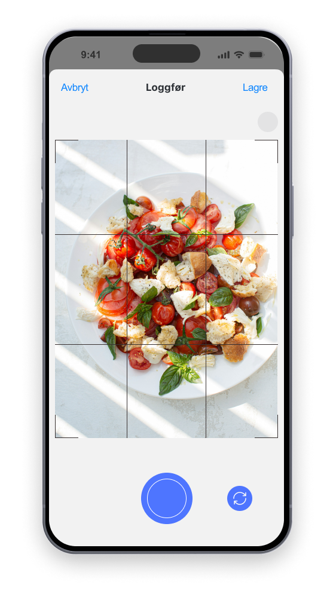
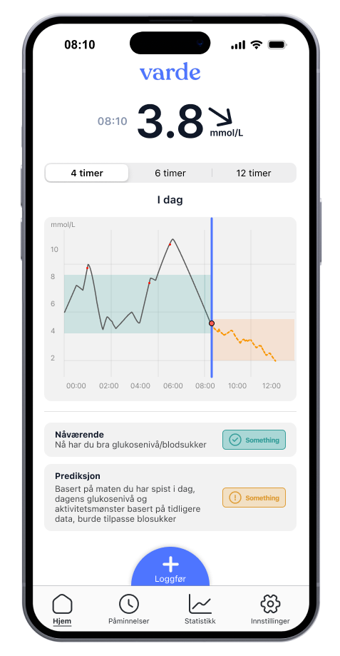
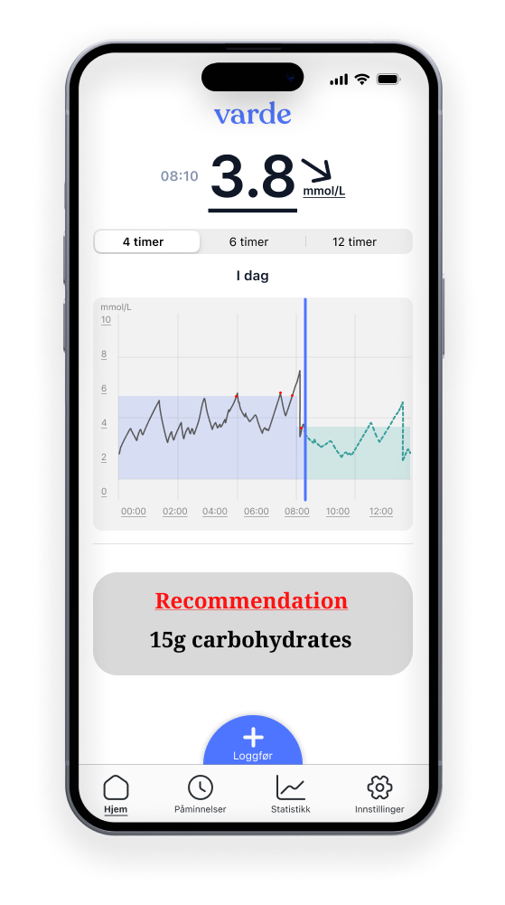

Hva er
T1?
Parallelt med utviklingen av T0 utvikler vi Varde T1 som skal benytte vår egenutviklede kunstige intelligens for å forutsi glukosenivåer basert på omfattende helsedata.
Appen vil gi skreddersydde anbefalinger om insulin og karbohydrater ved å ta hensyn til flere faktorer. Ved hjelp av algoritmen vil T1 tilpasse seg dine personlige faktorer, og bidra med å håndtere diabetes trygt, forutsigbart og enkelt.
Varde T1 er den endelige versjonen av løsningen vår, og vi sikter på lansering I begynnelsen av 2028.
Vår Løsning

1.
Skan
Ved å ta et bilde av måltidet ditt, beregner algoritmen i appen karbohydratinnholdet samtidig som den tar hensyn til andre viktige variabler som porsjonsstørrelse og mattype fra glykemisk indeks.
2.
Prediker
Ved å bruke disse dataene analyserer vår KI-modell glukosetrendene dine og forutsier nivåene dine opptil 4 timer frem i tid, basert på nylig aktivitet, insulinbruk, måltidsinntak og andre viktige faktorer.


3.
Anbefal
Vår AI gir deretter personlige anbefalinger for insulindosering tilpasset dine forventede glukosenivåer og individuelle behov.